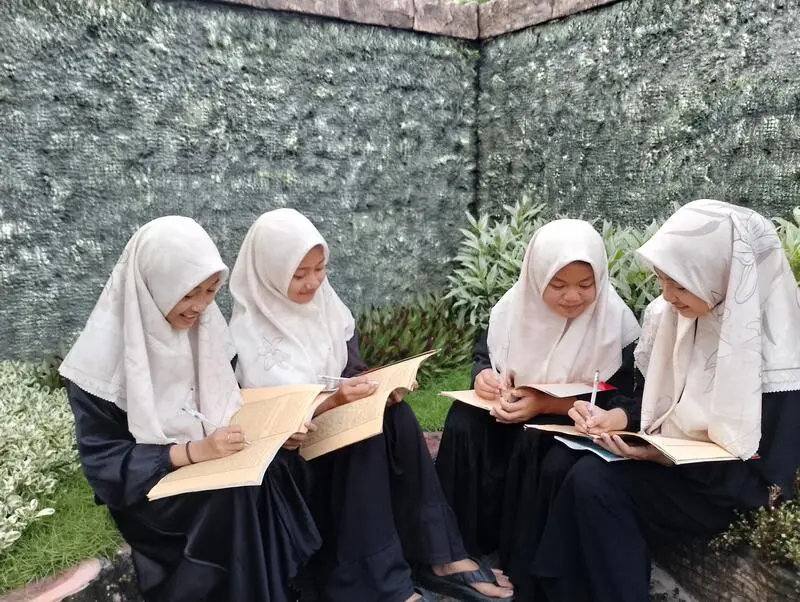

1. Mendapatkan Mahkota Kemuliaan di Akhirat
Rasulullah ﷺ bersabda: "Orang yang membaca Al-Quran dan menghafalnya, pada hari kiamat nanti ia akan diberi mahkota yang cahayanya lebih indah dari cahaya matahari." (HR. Abu Dawud). Ini menunjukkan betapa mulianya kedudukan seorang hafidz di sisi Allah SWT. Mahkota ini bukan mahkota biasa, melainkan mahkota yang memancarkan cahaya kemuliaan yang melebihi cahaya matahari itu sendiri.
Bayangkan betapa mulianya seorang hamba yang dikenakan mahkota oleh Allah SWT di hari kiamat. Tentu ini menjadi motivasi besar bagi para santri dan kaum muslimin untuk berlomba-lomba menghafal Al-Quran, menjadikannya sebagai prioritas utama dalam kehidupan.
2. Menjadi Keluarga Allah (Ahlullah)
Nabi Muhammad ﷺ bersabda: "Sesungguhnya Allah memiliki keluarga dari kalangan manusia. Para sahabat bertanya: Siapa mereka ya Rasulullah? Beliau menjawab: Mereka adalah ahli Quran (para penghafal Al-Quran), mereka adalah keluarga Allah dan orang-orang pilihan-Nya." (HR. Ahmad dan An-Nasa'i).
Gelar "keluarga Allah" (Ahlullah) adalah kehormatan tertinggi yang bisa didapatkan seorang hamba. Para penghafal Al-Quran dianggap sebagai orang-orang terdekat dengan Allah, yang selalu menjaga firman-Nya di dalam dada mereka. Kedekatan ini tidak hanya bersifat spiritual, tetapi juga memberikan ketenangan hati dan kebahagiaan yang tidak bisa diraih dengan harta duniawi.
3. Mendapatkan Syafaat di Hari Kiamat
Al-Quran akan memberikan syafaat (pertolongan) kepada para penghafalnya di hari kiamat. Rasulullah ﷺ bersabda: "Bacalah Al-Quran, karena sesungguhnya ia akan datang pada hari kiamat sebagai pemberi syafaat bagi para pembacanya." (HR. Muslim). Bagi para hafidz, syafaat ini tentu lebih besar karena mereka tidak hanya membaca tetapi juga menjaga Al-Quran di dalam hatinya.
4. Orang Tua Dikenakan Mahkota Kemuliaan
Keutamaan menghafal Al-Quran tidak hanya untuk si penghafal, tetapi juga untuk kedua orang tuanya. Rasulullah ﷺ bersabda: "Barangsiapa yang membaca Al-Quran, mempelajarinya, dan mengamalkannya, maka kedua orang tuanya akan dipakaikan mahkota dari cahaya pada hari kiamat, yang sinarnya seperti sinar matahari." (HR. Al-Hakim). Hadits ini menjadi kabar gembira bagi para orang tua yang mendukung anak-anaknya untuk menghafal Al-Quran.
5. Diangkat Derajatnya di Dunia dan Akhirat
Allah SWT mengangkat derajat para penghafal Al-Quran baik di dunia maupun di akhirat. Umar bin Khattab RA meriwayatkan bahwa Rasulullah ﷺ bersabda: "Sesungguhnya Allah mengangkat derajat suatu kaum dengan kitab ini (Al-Quran) dan merendahkan kaum yang lain dengannya." (HR. Muslim). Para hafidz mendapatkan kehormatan dan kedudukan tinggi, baik di mata manusia maupun di sisi Allah SWT.
6. Terhindar dari Azab Neraka
Para penghafal Al-Quran yang mengamalkan isinya dijanjikan perlindungan dari api neraka. Al-Quran menjadi perisai bagi penghafalnya dari berbagai keburukan dan azab. Ini karena Al-Quran yang tertanam di hati seorang hafidz akan senantiasa mengingatkannya untuk berbuat kebaikan dan menjauhi kemaksiatan, sehingga ia selalu berada di jalan yang benar.
7. Memiliki Hafalan yang Tetap Terjaga
Menghafal Al-Quran melatih daya ingat dan fungsi otak secara luar biasa. Penelitian modern menunjukkan bahwa aktivitas menghafal teks panjang secara rutin dapat meningkatkan kemampuan memori jangka panjang, konsentrasi, dan kemampuan kognitif secara keseluruhan. Para santri tahfidz di PP Miftahul Huda Kalanganyar membuktikan hal ini — mereka umumnya memiliki prestasi akademik yang lebih baik dibandingkan rata-rata.
8. Mendapatkan Ketenangan Hati
Allah SWT berfirman: "Ingatlah, hanya dengan mengingat Allah hati menjadi tenang." (QS. Ar-Ra'd: 28). Menghafal Al-Quran adalah bentuk dzikir tertinggi — menjaga firman Allah di dalam hati sepanjang waktu. Para hafidz merasakan ketenangan batin yang luar biasa, terhindar dari stress dan kecemasan yang banyak dialami oleh orang-orang di zaman modern ini.
9. Menjadi Imam dan Pemimpin Umat
Dalam tradisi Islam, orang yang paling banyak hafalannya didahulukan untuk menjadi imam sholat. Ini menunjukkan bahwa para hafidz memiliki kedudukan sebagai pemimpin dalam ibadah. Di PP Miftahul Huda, para santri tahfidz dilatih untuk menjadi imam dan pemimpin yang bertanggung jawab, sehingga mereka siap memberikan kontribusi positif di masyarakat.
10. Mendapatkan Pahala Berlipat Ganda
Setiap huruf yang dibaca dari Al-Quran bernilai satu kebaikan, dan satu kebaikan dilipatgandakan menjadi sepuluh. Bayangkan berapa banyak pahala yang didapatkan seorang hafidz yang membaca dan mengulang hafalannya setiap hari! Dalam sehari saja, seorang hafidz yang muraja'ah 5 juz bisa mendapatkan jutaan pahala kebaikan.
"Sebaik-baik kamu adalah orang yang belajar Al-Quran dan mengajarkannya." (HR. Bukhari). Hadits ini menjadi motivasi terbesar bagi siapa pun yang ingin memulai perjalanan menghafal Al-Quran.
Bergabung dengan Program Tahfidz PP Miftahul Huda
Pondok Pesantren Miftahul Huda Kalanganyar menyediakan program Tahfidz Al-Quran intensif dengan bimbingan para hafidz dan hafidzah berpengalaman. Program ini terbuka untuk santri putra dan putri dari berbagai jenjang usia. Dengan metode yang terstruktur dan lingkungan yang kondusif, insya Allah putra-putri Anda dapat menyelesaikan hafalan 30 juz dalam waktu 3-5 tahun.
Untuk informasi dan pendaftaran, hubungi kami di WhatsApp +62 813-3205-2559.
Ikuti Kami di Media Sosial